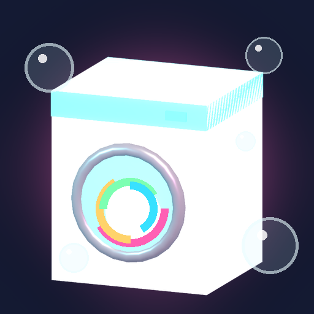

<- all projects

Spin Street Laundry
PC
Volume
Live
Run a neon laundromat, beat the bottleneck and save the block. Idle story.
Nana Bea has run the Suds & Spin on Spin Street for 40 years, and now a developer wants the lot by September. You have one summer to turn the tired laundromat into the heart of the block. Baskets move through Sort, Wash, Dry and Fold, so watch where the pile grows and balance every station through six tiers. Five chapters and 40 story orders from the regulars each hide a pocket find, leading to a block party and the vote that decides the shop's future. Afterwards, open branches on Bubble Avenue and Rinse Row.